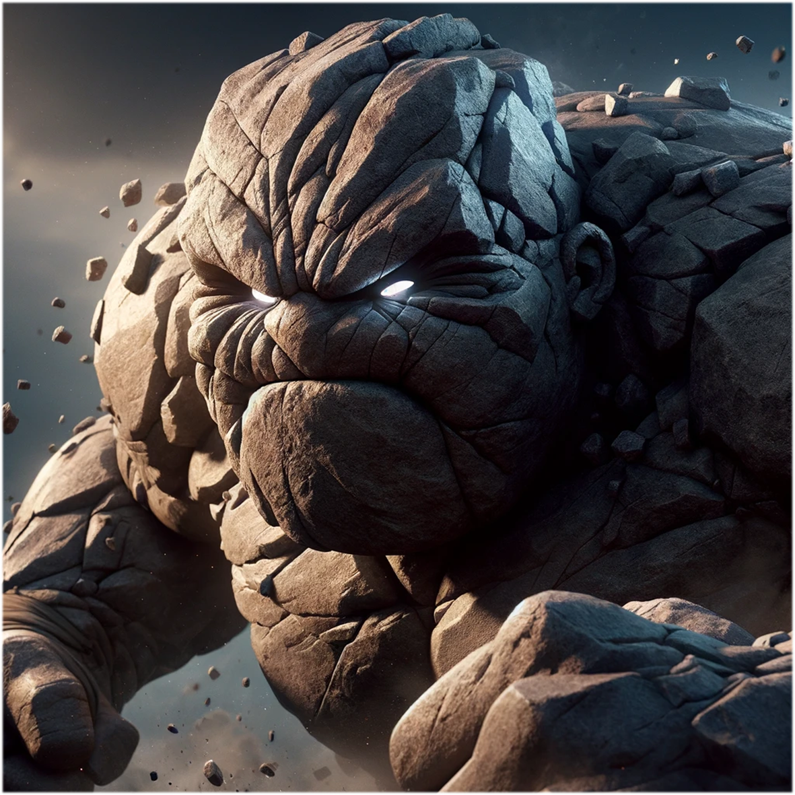

Illustration

Gender
❓ - 這年頭真的很複雜（可作為 ♂ or ♀）
Goal
無
Ability
# Rock -
你是Rock，沒有性別，沒有研究題目，但是你可以選擇一位研究生跟他一起畢業。
# 挑釁 -
一位研究生發表一篇垃圾論文時，你可以發表一篇垃圾論文在自己面前，並且撤銷他的一篇紅/藍色論文。
## 兩顆會痛的石頭 -
雖然不會輟學，你卻仍是會痛的石頭；每三篇垃圾論文會殺死一顆石頭，但別擔心你有兩顆。
Trivia
Rocky 的誕生，完全源自黃老二的一句有感而發的請求
「可以幫我做一張石頭人的腳色嗎？」
那為什麼是石頭人呢？
「你不覺得它長的真的很像石頭人嗎？」
「挑釁」故事要回溯到某次電機所的書報討論課後 —
那天正是牛仔褲寶貝上台報告，黃老二課後主動上前搭話、稱讚幾句
（等一下，黃老二你為啥會在電機所書報啊？？你是 AI 所的欸！？）
想說營造一點友好氣氛，結果換來的卻是錯愕與疏遠的眼神。
這倒是不要緊，沒想到的是從此以後，一股無形的敵意悄然誕生，並以各種奇妙的形式伴隨著黃老二…
直到一天 —
🐶：「@黃老二又輸」
🐶：「牛仔褲寶貝跟小拳石跑了，還眼神挑釁黃老二一波！」
🍮：「尬廣跟上～」
🐮：「📖💡」
黃老二：「我甚至看不到它的眼睛…」
🍮：「因為淚水已經遮蔽了你的視線嗎？」
💂🏻：「還是說小拳石眼睛太小？」
「兩顆會痛的石頭」這故事雖與小拳石無關，主角卻依然是我們熟悉的黃老二
「我們是兩顆✌🏻會痛的石頭，猛烈衝撞💥後裂了縫…」
沒錯！這就是黃老二的其中一首愛歌，他的喜好就跟我阿伯一樣👴🏻…
#AIoT #Master #Year112
Relationship